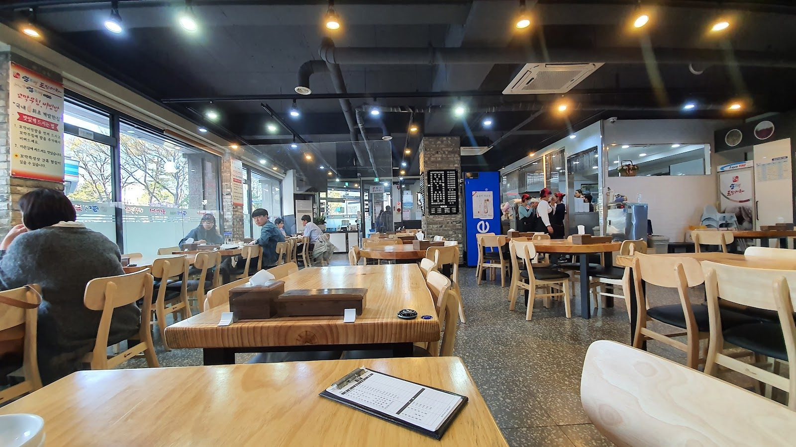

FOOD
FOODRibs of Legend Haeundae: A Korean Rib Stop in Busan
Read guide →
FOODUmjine in Gangneung: A Seafood Stop for Cockle-Rice Fans
Read guide → FOOD
FOODBar Boon on Hwangnidan-gil: A Relaxed Evening Stop in Gyeongju
Read guide → FOOD
FOODGozip Dol Wooluck Jeju Airport Branch: A Seafood Stop to Consider in Jeju
Read guide → FOOD
FOODOndam in Jeonju: A Food Stop to Check Before You Go
Read guide → FOOD
FOODWhat to Know About Korean Delivery Food
Read guide → FOOD
FOOD